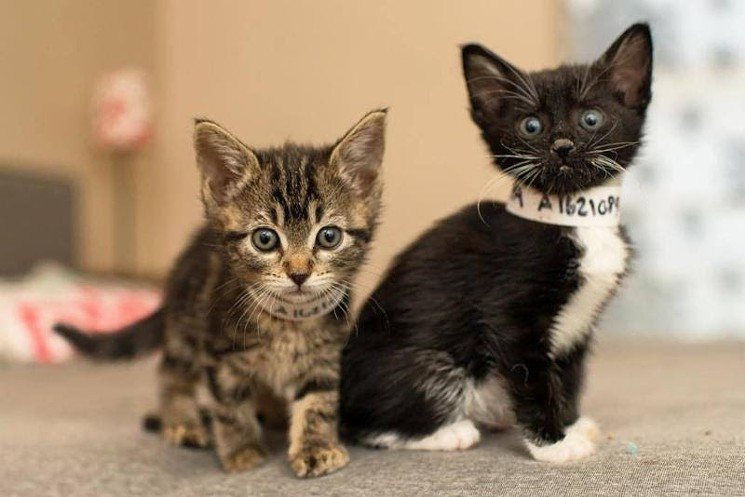

Want to help find lost kittens? Whether you're a shelter worker trying to help a guardian find a missing kitten or you've lost a pet yourself, the first step to successfully locating a lost kitten is to understand how they behave. Lost pets do not behave like pets in their own homes. They demonstrate distinct patterns of behavior common in lost dogs and cats, often so different from their usual behaviors that their guardians fail to find them even when nearby.
Black Cat Rescue, a national nonprofit organization dedicated to reuniting people with their lost pets, has studied the issue of lost companion animals and discovered that understanding those patterns of behavior can dramatically increase the chances that a lost cat will be recovered. They've also put together a program based on those traits that can give shelter workers another tool to help cat owners find their lost pets, preventing those cats from ending up in shelters or being injured, stolen, or killed.
Since 1997, Black Cat Rescue volunteers have conducted thousands of physical searches and/or lost pet consultations, and identified these lost pet behaviors that can be used to more effectively search for lost pets. When a cat who is allowed access outside vanishes, it means that something has happened to interrupt the customary behavior of that cat coming back home. Any cat that is transplanted into unfamiliar territory is a displaced cat. The majority of cases of displacement involve indoor-only cats that accidentally escape outdoors. However, outdoor-access cats can become displaced into unfamiliar territory as well. Some outdoor-access cats can become displaced when chased from their territory (usually by another cat or a loose dog) and can end up just a few houses away, hiding in fear. While some of these cats may adapt after a few days and work up the confidence to return home, many become disoriented. One of the primary methods recommended to recover displaced cats is the use of digital wildlife cameras and baited humane traps.
Sick, Injured, and Panicked Cats Hide in Silence The behavior of a sick, injured, or panicked cat is that they will hide in silence. Just because the cat owner does not see or hear their cat does not mean that s/he is not right there. The lost cat could be hiding in the neighbor's yard. If not found, the cat will likely end up in your shelter in a few months. Cats who are afraid or injured will seek areas of concealment such as under a deck, under a house, under a porch, or in heavy brush. Most critically, these cats will not meow. Meowing would give up their location to a predator. Their behavior has nothing to do with whether the cat loves you, recognizes your voice, or whether s/he can smell you. It has everything to do with the fact that a panicked cat will hide in silence. So just because you do not see or hear your cat does not mean that s/he is not very close to home.
An interesting behavioral pattern that Missing Pet Partnership has observed with displaced cats is that many cats will simply not respond to food or break cover (from their hiding place) for several days. Cats with confident temperaments initially hide in silence, but within hours (or sometimes days) break cover and meow, return to the front door, or finally enter a humane trap. Cats with more skittish, fearful temperaments may take several days before they finally reach a threshold point (typically ten to twelve days) and before they will finally break cover. In one case, an extremely timid cat hiding inside the attic of a veterinarian's office did not enter a baited humane trap for twenty-two days, most likely due to barking dog noises that kept the cat in a constant state of fear. Cat owners should be encouraged to continue with trapping efforts even if their cat does not immediately enter the baited trap.
Cat caregivers often behave in ways that actually reduce their chances of recovering their lost pet. Some develop "tunnel vision" and fail to find their pet because they focus on wrong theories. They assume their dog was "stolen and sold to research" when in fact their dog might have been rescued and put up for adoption through a local adoption event. Cat caregivers are often discouraged by others who tell them "your cat was probably killed by a coyote," when in fact their cat is hiding under the neighbor's deck. Alone and discouraged, both cat caregivers experience "grief avoidance" and quickly give up search efforts because they really believe they will never see their pet again. Sometimes rescuers who find lost cats behave in ways that reduce the chances that the animal will be reunited with their owners.
People who see a skittish cat darting under a deck automatically assume that the cat is "feral," when in fact the cat could be a tame housecat born with a fearful temperament and has been shy since it was a kitten. Some people who find a stray dog who does not have a collar automatically assume it is "homeless" and therefore immediately work to place the dog rather than attempt to find the dog's owner. In addition, the first place the caregiver of a lost dog will search for his or her dog - the local shelter - is typically the last place that someone who finds a loose dog will take it, for fear the animal will be killed. With everything working against them, people who lose their beloved cats need all the help they can get in order to achieve a successful reunion. Your willingness to guide them to the proper recovery techniques could not only save their animal's life, it could free up cage space in your shelter and save the life of another animal as well. Now that you know about the human and animal behaviors that inhibit lost pet recoveries, here are some tips and techniques you can pass along to caregivers to increase the chances they'll find their lost cat. Tailor the Search to the Situation One of the biggest mistakes related to advising pet caregivers how to search for a lost pet is to provide "one type fits all" lost pet recovery advice.
It is critical to encourage cat caregivers to obtain permission from their neighbors to enter their yards and conduct an aggressive, physical search of their property, looking under and in every conceivable hiding space for their lost cat. Just handing a flyer to a neighbor and asking them to "look" for a missing cat will not do. Most neighbors simply will not go out into their yards, get on their belly, and look around under their house or deck for someone else's cat. And yet many times neighbor's yards are the areas where a sick, injured, or displaced cat is likely to be found. Based on knowledge of the effects of "inattentional blindness" and the poor visibility of most lost pet signs, Missing Pet Partnership has discovered a creative and highly effective tool for recovering lost pets. If the owner/guardian of a missing cat says she is an indoor-only cat that escaped outside, suggest that they utilize feeding stations with baited humane traps and wildlife cameras to help recover their pet. Missing Pet Partnership offers detailed information on this topic on their website, along with lost pet consultations to instruct cat owners in how to use humane traps and/or wildlife cameras to help recover displaced cats. In the past, MPP instructed 43 families to do this and 14 of them got their lost cat back by using this technique. House as Trap
This is a unique lost pet recovery technique that Missing Pet Partnership advises some pet owners to use to capture skittish cats. The concept is that when someone has a skittish pet who bolts outside and then returns to the home but won't allow anyone to approach and keeps darting away in fear whenever the owner/guardian opens or approaches the door, they can effect a capture by hiding behind the door, enticing the animal into the house, and slamming the door closed.
The biggest enemy that cat owner/guardians will have is their desire to give up too soon. This behavior is called "grief avoidance" and is natural. In times of grief, people want closure and an end to their emotional pain. However, people who give up too soon typically don't find their lost pets. The most critical and effective tool that you can give to someone who's lost a dog or cat is encouragement. Refer families to Missing Pet Partnership's website and advise and encourage them to not give up hope.